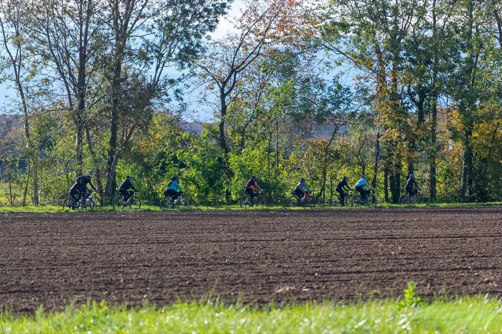

Percorso +2 · Tematico
Mugello Cicloturismo
Percorso in stile gravel/cicloturismo
In Bici
MTB/EBIKE
- Durata
- 1 giorno
- Lunghezza
- 73 Km
- Difficoltà
- Gravel-Style
- Dislivello
- 1599 Mt
Traccia (72,2 km)Partenza e arrivo
Porta il percorso con te
Scarica la traccia per il navigatore o per un'app come Komoot, OsmAnd o Wikiloc.
Sentieri e cammini attraversati
- Sentieri CAI
- nr. 28
- Cammini
- Pista Ecoturististica Sieve SOFT 7 - Via Degli Dei SOFT 17
Descrizione del percorso
Leggi il racconto di Orme del Mugello
Il percorso parte da Borgo San Lorenzo (188 m), da via beato Angelico. Da qui è possibile visitare il centro storico, con quel che ne rimane delle sue mura trecentesche e la Pieve di San Lorenzo. La Pieve rappresenta un significativo punto di riferimento storico e artistico per la comunità del Mugello. Le prime testimonianze documentate risalgono al 934, ma l'attuale edificio deriva da una ricostruzione tra il XII e il XIII secolo, che gli ha conferito l’attuale stile romanico con una facciata sobria e un’ampia abside semicircolare. Nel corso dei secoli, sono stati effettuati diversi interventi di restauro e ampliamento, senza intaccarne il valore spirituale e culturale.
Un elemento distintivo della pieve è il campanile in cotto, dalla peculiare pianta esagonale irregolare, situato sopra l’abside. Alto cinque piani, presenta monofore e bifore per la diffusione del suono delle sei campane, fuse nel 1826 dal pratese Santi Gualandi. L’interno è suddiviso in tre navate sostenute da colonne e pilastri quadrangolari, mentre la navata centrale culmina in una maestosa abside decorata con eleganti capitelli scolpiti. La chiesa custodisce numerose opere d’arte, tra cui un frammento pittorico di Giotto raffigurante la Madonna col Bambino, proveniente dall’oratorio di Sant’Omobono. Tra le altre opere spiccano la Deposizione di Cesare Velli, una Madonna col Bambino di Niccolò di Pietro Gerini e una Croce dipinta attribuita a Lorenzo Monaco. Importante anche il busto di San Lorenzo, attribuito a Donatello, che originariamente decorava la facciata prima di essere trafugato. La Pieve di San Lorenzo si configura dunque come un crocevia di storia, fede e arte, testimone di un ricco passato che continua a vivere nel presente.
Attraversato il centro storico si giunge in prossimità dell’argine del fiume Sieve, importante corso d’acqua che caratterizza tutto il basso Mugello e che arriva a sfociare, dopo un percorso di oltre 70 km, nel fiume Arno. Si percorre per intero la pista ecoturistica Sieve, che segue il fiume omonimo per qualche chilometro, fino ad arrivare a San Piero a Sieve, importante meta lungo il Cammino degli Dei.
Tra gli edifici che meritano una visita, è degna di menzione la Pieve di San Pietro, la quale, nel corso dei secoli, ha visto il passaggio di numerosi personaggi illustri: oltre alla famiglia Medici, la chiesa fu frequentata da figure di spicco del clero e della cultura locale. Fondata nell'XI secolo in un punto strategico lungo le vie medievali tra Firenze, la Romagna e il Casentino, divenne presto un centro religioso e sociale di riferimento. Il nome "pieve" deriva dal latino plebs, indicando la sua funzione battesimale per la comunità locale. Attorno alla chiesa si sviluppò il borgo di San Piero a Sieve, che mantenne nei secoli un legame stretto con questa istituzione ecclesiastica. L’edificio, inizialmente romanico, ha subito ampliamenti e restauri, in particolare sotto il dominio dei Medici, che ne riconobbero l’importanza strategica e spirituale. La facciata sobria e le colonne in pietra serena all’interno conferiscono alla chiesa un’atmosfera austera e suggestiva. Il campanile medievale domina il paesaggio circostante, rafforzando il ruolo simbolico della pieve. Oltre all’architettura, la chiesa conserva affreschi rinascimentali, un crocifisso ligneo medievale e un pregiato fonte battesimale. Si narra che nei sotterranei siano stati nascosti oggetti preziosi durante i conflitti. La Pieve di San Pietro, dunque, rimane una testimonianza vivente della storia, della fede e dell’arte del Mugello.
Ci lasciamo San Piero a Sieve alle spalle, inoltrandoci nella campagna tipica del Mugello.
Percorrendo un affascinante quanto panoramico tratto della Via degli Dei, arriviamo a Sant’Agata, frazione del vicino comune di Scarperia. Nel cuore della borgata, nonché punto di ritrovo di pellegrini, escursionisti e frequentatori del cammino che unisce i due capoluoghi di regione (Firenze e Bologna), è presente la Pieve di Sant’Agata. L’edificio ha origini che risalgono almeno al X secolo, anche se si ipotizza l’esistenza di un luogo di culto già in epoca longobarda. Dedicata alla martire siciliana Sant’Agata, divenne nel Medioevo un centro religioso di grande importanza, con un vasto patrimonio fondiario e un’influenza che superava i confini del Mugello. La Pieve conserva la sua struttura romanica originale, caratterizzata da una facciata in pietra locale con arcate cieche e un portale finemente scolpito. Accanto si erge un imponente campanile quadrato, che domina il paesaggio circostante. L’interno custodisce opere di grande valore, tra cui un fonte battesimale del XII secolo, dipinti rinascimentali e un crocifisso ligneo medievale. Nei pressi della pieve si trova un chiostro storico e un Museo di Arte Sacra, dove sono esposti paramenti liturgici, reliquari, sculture e codici miniati, testimoniando il profondo legame tra arte e spiritualità di questo antico luogo.
Dalla Pieve di Sant’Agata si giunge dopo pochi chilometri ad un’altra pieve, vero gioiello dell’epoca romanica, la Pieve di Santa Maria a Fagna. Situata nei pressi di Scarperia, ha svolto per secoli un ruolo centrale nella vita religiosa e culturale del territorio. Le prime tracce della sua esistenza risalgono all’XI secolo, sebbene l’attuale struttura derivi da interventi successivi. Il nome "Fagna" potrebbe derivare dal latino fagus (faggio), in riferimento alla vegetazione antica della zona. Durante il Medioevo, la pieve era un importante centro religioso e amministrativo, coinvolto nei conflitti tra Firenze e le signorie locali. Con l’avvento dei Medici, nel XV secolo, beneficiò di restauri e nuove opere d’arte. L’edificio presenta una pianta a tre navate e conserva elementi medievali, tra cui un affresco quattrocentesco, un crocifisso ligneo del XVI secolo e un pregiato altare in pietra serena.
Siamo ormai prossimi a Scarperia, un affascinante borgo medievale nato come avamposto strategico lungo la via che collegava Firenze a Bologna. Reso famoso per la produzione delle sue lame, divenne presto un centro di grande importanza economica e culturale.
Percorriamo le strade del centro di Scarperia e ci dirigiamo verso il l’Autodromo del Mugello, una delle piste più celebri del motorsport. Le sue origini risalgono alle corse su strada del primo Novecento, quando piloti come Nuvolari e Ferrari si sfidavano lungo percorsi spettacolari. Per ragioni di sicurezza, nel 1974 venne inaugurato l'attuale circuito, grazie all'intervento della Ferrari. Con i suoi 5,245 km e 15 curve, il tracciato è noto per le sue curve impegnative, come Arrabbiata 1 e 2, e per i lunghi rettilinei dove si superano i 350 km/h. Ospita il Gran Premio d'Italia di MotoGP e, nel 2020, ha accolto la Formula 1 con il GP della Toscana. Le curve del circuito portano nomi legati al territorio, come San Donato e Luco. Tra storia, leggende e panorami suggestivi, il Mugello Circuit è un punto di riferimento per gli appassionati di motori.
Si continua verso nord, in direzione Luco di Mugello. Qui è visitabile la Chiesa di San Pietro, un importante edificio storico e artistico, un tempo parte del monastero camaldolese femminile. Fondata nel 1086 e consacrata nel 1220, subì trasformazioni nel corso dei secoli, arricchendosi di elementi rinascimentali tra il XV e il XVII secolo. L’ampliamento del 1473-1476, attribuito a un allievo di Giuliano da Sangallo, conferì alla struttura uno stile più armonioso. Nel 1523, durante un’epidemia di peste a Firenze, il pittore Andrea del Sarto trovò rifugio nella chiesa, lasciando un’impronta artistica significativa. Con la soppressione del monastero nel 1808 sotto il dominio francese, le monache furono allontanate. Nel 1871, il complesso fu trasformato in ospedale, funzione mantenuta fino al 1989. Tra gli elementi di maggior pregio si distingue la lunetta in maiolica sulla facciata, donata nel 1930, che richiama la Madonna Pazzi di Donatello e testimonia l’influenza delle Fornaci San Lorenzo.
Si attraversano località immerse nella campagna della campagna del Mugello: da Grezzano fino a Panicaglia. Poco prima di quest’ultima borgata, è presente un altro edificio che racchiude storia e arte: la Chiesa di San Giovanni Maggiore. La chiesa è un notevole esempio di architettura medievale, con una storia che affonda le radici nel XII secolo. Dedicata a San Giovanni Battista, riflette la forte devozione toscana per il santo patrono di Firenze. Al suo interno si trovano affreschi e dipinti che narrano episodi della sua vita, oltre a un altare maggiore e cappelle laterali decorate con elementi artistici di pregio. L’atmosfera, esaltata dalla struttura romanica, invita alla contemplazione e alla spiritualità.
Uno degli elementi più distintivi della chiesa è il suo imponente campanile longobardo. Caratterizzato da una base massiccia e quadrata con aperture ridotte, ricorda più una torre difensiva che un tradizionale campanile. La sua struttura ottagonale e le monofore disposte a diverse altezze suggeriscono che in passato potesse servire a scopi strategici. Secondo studi storici, il terremoto del 1919 danneggiò seriamente il campanile, portando a restauri che ne modificarono alcuni dettagli.
Queste zone non sono famose solo per gli edifici ecclesiastici, ma anche per la presenza di dimore che sono state rifugio per artisti e scrittori. Ne è un esempio la Villa della Casa, in prossimità della frazione di Mucciano. La villa è famosa per essere la dimora natale di Monsignor Giovanni della Casa (1503-1556), autore del celebre Galateo. Figura di spicco del Rinascimento italiano, Giovanni della Casa fu religioso, diplomatico, poeta e scrittore. La sua opera più conosciuta, il Galateo, è un trattato che codifica le buone maniere e l’etichetta, diventando simbolo delle buone maniere stesse. Oltre al Galateo, scrisse poesie e trattati, esprimendo una profonda cultura letteraria. Villa della Casa è stata una meta di studiosi e intellettuali, attratti sia dalla figura dell’autore che dalla bellezza del paesaggio che lo ispirò. Si racconta che proprio nella villa Giovanni iniziò a formulare le idee che avrebbero dato vita al suo famoso trattato, influenzato dal paesaggio e dall’educazione ricevuta. La villa rimane un simbolo del legame tra l’autore e il territorio che ne ha segnato la formazione.
Ancora qualche chilometro immersi nello splendido contesto rurale, che si fa ingresso a Vicchio, paese reso celebre dai suoi artisti. Nel cuore del borgo, in Piazza Giotto, si erge una delle opere simbolo del borgo: la statua dedicata a Giotto di Bondone, il grande maestro del Trecento nato proprio in questa terra. Questo monumento celebra l’arte e il genio del pittore, considerato il fondatore della pittura moderna, e rappresenta un omaggio dell’intera comunità mugellana alla sua più illustre figura storica.
La realizzazione della statua risale alla fine dell’Ottocento, quando la cittadinanza di Vicchio promosse una grande raccolta fondi per onorare il proprio concittadino più celebre. L’iniziativa trovò un ampio consenso e persino Giosuè Carducci, il famoso poeta e letterato italiano, contribuì alla causa, dimostrando l’importanza che Giotto aveva per la cultura nazionale. L’iniziativa che portò alla sua realizzazione testimonia l’orgoglio con cui il Mugello conserva e celebra le sue radici artistiche, continuando a essere una terra di ispirazione, proprio come lo fu per il giovane pastorello divenuto leggenda. L’opera fu affidata allo scultore Italo Vagnetti, che realizzò una statua in bronzo raffigurante Giotto in piedi, con lo sguardo rivolto verso l’orizzonte, vestito con un mantello e con la tavolozza in mano, simbolo del suo talento pittorico.
La “Solingen d’Italia”
Il coltellino di Scarperia ha origini medievali e divenne celebre già dal XV secolo per la maestria dei suoi artigiani nella lavorazione del ferro e dell'acciaio. Il borgo, fondato nel 1306, fu presto rinomato per la qualità e la robustezza dei suoi coltelli, tanto da essere chiamato la "Solingen d'Italia". Tra i modelli più noti vi è la zuava, un coltello a serramanico usato da contadini e pastori, simbolo di una tradizione artigianale ancora viva.
Dormire, mangiare e prodotti lungo il percorso
Strutture ricettive (51)
- Affittacamere Al Mulino contatti
- Affittacamere Via Degli Dei contatti
- Agriturismo Poggio Bartoli contatti
- Alla Corte Di Carla contatti
- Area Di Sosta Vecchio Ponte contatti
- BeB AURA contatti
- BeB CIRCUIT contatti
- BeB IL PITTORE contatti
- BeB IL PODERE DELLA PIAZZA contatti
- BeB LA CASA DI COSIMO contatti
- BeB LA PIEVE contatti
- BeB LE DUE VOLPI contatti
- BeB VACANZE IN MUGELLO contatti
- Borgo! Hospitality contatti
- Camping Village Mugello Verde contatti
- Casa Torta contatti
- Casale San Giorgio contatti
- Castello Del Monsignore contatti
- Fattoria La Topaia contatti
- Hotel Ebe contatti
- Hotel La Rosa contatti
- Hotel Marrani contatti
- I Suoni Del Bosco contatti
- Il Borghetto contatti
- Il Borgo Di Elisa contatti
- Il Gallo Birichino contatti
- Il Nido di Gabbiano BeB contatti
- Il Podere Di Tullio contatti
- Il Poggio Alle Ville contatti
- Il Villino contatti
- La Colombaia contatti
- La Corte Di Ronzano contatti
- La Fattoria Del Farneto contatti
- La Felicina contatti
- La Terrazza contatti
- Locanda Degli Artisti contatti
- MONSIGNOR DELLA CASA COUNTRY RESORT eSPA contatti
- Mugello Hostel contatti
- Mugello Vacanze contatti
- My Home contatti
- Podere Ugolini contatti
- Poggio Savelli contatti
- Residences E Appartamenti- Villa Torricelli Il Giardinetto contatti
- Residenza Di Campagna Montelleri contatti
- Short Term Rental In Borgo San Lorenzo contatti
- Short Term Rental In Scarperia E San Piero contatti
- Short Term Rental In Vicchio contatti
- Tre Fiumi contatti
- Villa Cerreto contatti
- Villa Di Pilarciano contatti
- Villa La Commenda Concordia contatti
Aziende (13)
- Azienda Agricola Palazzo Vecchio contatti
- Azienda Agricola Poggio dei Roti contatti
- B.beb La Casa di Cosimo
- Bacco del Monte di Elena Bartalucci contatti
- Banco Fiorentino - Filiale di Borgo San Lorenzo
- Banco Fiorentino - Filiale di Luco di Mugello
- Banco Fiorentino - Filiale di Scarperia
- Banco Fiorentino - Filiale di Vicchio
- Il Poggio alle ville di Raffaele Edlmann contatti
- Marchisoro Farm
- Monsignor della Casa Country Resort e Spa
- Società agricola Bacciotti s.s. di Sandra e Roberto Mongili contatti
- Società agricola Il Ponte di Trotta Rocco e Lompi Stefania s.s. contatti
Il nome della struttura porta al suo sito web; "contatti" apre la scheda con telefono e mail sul portale turistico Mugello Toscana (per chi non ha un sito c'è solo quella). Le aziende portano ai loro siti. Sono tutte segnate anche sulla mappa.
Percorso, traccia e testi di Orme del Mugello, pubblicati con il loro permesso.